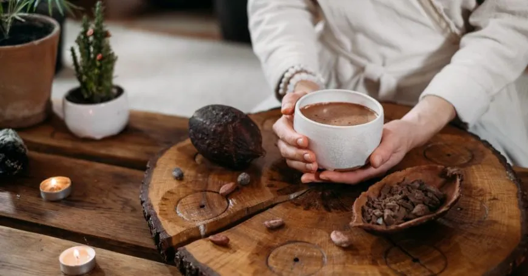

Élixirs naturels · 5 min de lecture
Élixir au Cacao Cru : le rituel ancestral pour nourrir le cœur, l’esprit et l’énergie vitale


Introduction
Bien avant de devenir un simple produit sucré industriel, le cacao était considéré comme une plante sacrée. Utilisé par les civilisations anciennes d’Amérique centrale et du Sud, le cacao cru était consommé pour ouvrir le cœur, renforcer l’énergie vitale et soutenir l’équilibre émotionnel.
Aujourd’hui, dans un quotidien souvent marqué par le stress, la fatigue émotionnelle et la perte de sens, revenir à ce type de rituel ancestral peut profondément transformer notre rapport au corps et à l’esprit.
Dans cet article, je te présente un élixir naturel à base de cacao cru, élaboré avec une alchimie d’ingrédients soigneusement choisis pour soutenir la santé mentale, émotionnelle et physique, tout en respectant l’intelligence du vivant.
👉 Je tiens à vous rappeler une règle d’or que j’aime beaucoup et qui guide mes choix au quotidien : si la nature ne l’a pas créé, ne le buvez pas.
Le problème
Beaucoup de personnes cherchent aujourd’hui de l’énergie, du réconfort ou du plaisir… mais se tournent vers :
le sucre raffiné,
le café en excès,
les excitants artificiels,
les produits ultra-transformés.
Résultat :
nervosité,
montagnes russes émotionnelles,
fatigue après stimulation,
dépendance aux stimulants,
déconnexion du corps et des sensations.
Le corps n’a pas besoin d’être stimulé davantage.
Il a besoin d’être nourri intelligemment, en profondeur.
La promesse
L’élixir au cacao cru n’est pas un excitant brutal.
C’est un nourrissant profond, à la fois physique, émotionnel et mental.
Il soutient l’énergie vitale, favorise une sensation de bien-être naturel, ouvre l’espace du cœur et apporte une clarté douce, sans agitation ni chute énergétique.
Les bénéfices
Une énergie douce et stable
Une amélioration de l’humeur et de la clarté mentale
Une meilleure connexion au corps et aux émotions
Un soutien naturel du système nerveux
Un rituel réconfortant et profondément ancrant
🌿 Pourquoi ce remède est efficace
Le cacao cru est l’un des aliments les plus riches en magnésium, un minéral essentiel au système nerveux et à la détente musculaire.
Il contient également :
des antioxydants puissants,
des composés favorisant la production de sérotonine et de dopamine,
des acides aminés soutenant la concentration et l’humeur.
Contrairement au chocolat transformé, le cacao cru conserve toute sa force nutritionnelle et vibratoire.
Associé à des ingrédients comme le lait végétal, la cannelle et le miel, il devient hautement assimilable et agit en synergie sur le corps et l’esprit.
👉 C’est un élixir qui nourrit autant le cœur émotionnel que le corps physique.
💪 Les bienfaits de l’élixir au cacao cru
Soutien de l’humeur et du bien-être émotionnel
Le cacao cru favorise naturellement les neurotransmetteurs liés au plaisir et à la motivation.Réduction du stress et de la tension nerveuse
Grâce à sa richesse en magnésium, il apaise le système nerveux.Énergie vitale sans agitation
Contrairement au café, l’énergie du cacao est progressive, stable et douce.Puissant antioxydant
Il protège les cellules du stress oxydatif et soutient la longévité.Connexion au cœur et à l’instant présent
Utilisé en rituel, il favorise l’introspection, la créativité et la présence.
🍫 La recette de l’Élixir Cœur & Vitalité au Cacao Cru
Ingrédients (alchimie optimale)
1 cuillère à soupe de cacao cru en poudre (non sucré, bio)
200 ml de lait végétal (amande ou coco, idéalement)
1 cuillère à café de miel brut ou de sirop d’érable (optionnel)
½ cuillère à café de cannelle
Une pincée de piment doux ou de gingembre (facultatif, pour activer la circulation)
Une pincée de vanille naturelle (optionnelle, pour l’ancrage et la douceur)
Pourquoi cette synergie fonctionne ?
Le cacao cru nourrit le système nerveux et le cœur.
Le lait végétal adoucit et facilite l’assimilation.
La cannelle stabilise l’énergie et soutient la digestion.
Le piment ou le gingembre activent la circulation et l’énergie vitale.
La vanille apporte une dimension réconfortante et émotionnelle.
Préparation
Fais chauffer doucement le lait végétal (sans le faire bouillir).
Ajoute le cacao cru et fouette doucement pour éviter les grumeaux.
Incorpore les épices.
Retire du feu et ajoute le miel ou le sirop.
Bois chaud ou tiède, lentement, en conscience.
⏰ Comment l’utiliser
À consommer 1 fois par jour, idéalement :
le matin pour une énergie stable,
ou en milieu d’après-midi pour éviter les coups de fatigue.
Peut être utilisé comme rituel quotidien ou ponctuel.
Idéal avant une séance créative, méditative ou introspective.
👥 À qui s’adresse ce rituel
À ceux qui veulent une énergie naturelle sans nervosité
Aux personnes stressées ou émotionnellement fatiguées
À ceux qui souhaitent réduire le café et le sucre
Aux créatifs, entrepreneurs, sportifs ou personnes sensibles
À toute personne en quête d’un rituel nourrissant et conscient
⚠️ Précautions
Choisis un cacao cru, pur et non sucré.
Évite en fin de journée si tu es très sensible aux stimulants.
Respecte les dosages : plus n’est pas toujours mieux.
En cas de troubles cardiaques ou de sensibilité particulière, demande conseil à un professionnel de santé.
🌱 Conclusion & appel à l’action
L’élixir au cacao cru n’est pas une simple boisson.
C’est une invitation à ralentir, à ressentir, à nourrir ton corps et ton cœur avec respect.
Il rappelle que le bien-être ne vient pas de l’excès, mais de la justesse.
De ce que l’on choisit d’intégrer, consciemment, dans son corps.
👉 Si la nature ne l’a pas créé, ne le buvez pas.
Je partage régulièrement des élixirs, rituels et guides bien-être pour t’aider à retrouver énergie, clarté et équilibre, naturellement.
📚 Je suis auteur bien-être sous le pseudo Chest0 JM.S., et mes ouvrages sont disponibles sur Amazon.
🔗 Retrouve tout mon univers ici :
👉 https://linktr.ee/Chest00
👉 Si tu veux aller plus loin, découvre aussi notre : le curcuma cet aliment magique
Plus de 40 recettes d'élixirs dans les livres Chest0.
Voir les livres